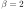
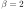
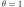
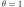

Next: Voronoi tesselation on a Up: Miscellaneous notes Previous: November – Digital filtering Contents
There is a lot of literature on the inverse of a Gaussian distributed variable (this should not be fixed with inverse Gaussian distribution—it is a different matter). The inverse distribution is ill-behaved; the mean and variance do not generally exist.
I came up with a simple approximation that works well if the mean is large enough and the variance is small enough (I have yet to work out the details of the exact conditions for this approximation. However, the results can be verified, e.g., by Monte Carlo simulations).
First, approximate the Gaussian distributed variable
 by a log-normally distributed variable
by a log-normally distributed variable
 Lognormal with corresponding mean and variance, i.e.,
Lognormal with corresponding mean and variance, i.e.,


 and
and
 as an easy exercise for the reader. (:
as an easy exercise for the reader. (:
Using the theory of log-normal distribution, the inverse of  is now given by
is now given by
 Lognormal
Lognormal
That's it!
References: